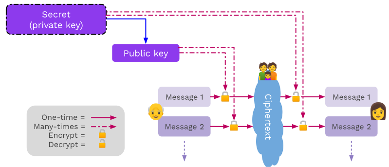

<!DOCTYPE html>
<html lang="en">

<head>
  <meta charset="utf-8" />
  <meta name="viewport" content="width=device-width, initial-scale=1.0, maximum-scale=1.0, user-scalable=no" />

  <title>Encryption</title>
  <link rel="shortcut icon" href="./../../assets/favicon.ico" />
  <link rel="stylesheet" href="./../../dist/reset.css" />
  <link rel="stylesheet" href="./../../dist/reveal.css" />
  <link rel="stylesheet" href="./../../assets/styles/PBA-theme.css" id="theme" />
  <link rel="stylesheet" href="./../../css/highlight/shades-of-purple.css" />

  <link rel="stylesheet" href="./../.././assets/styles/custom-classes.css" />

</head>

<body class="site">
  <header class="site-header">
    <!-- This logo is a link only on the watching server, not the production build -->
    <a href="">
      
    </a>
  </header>
  <main class="reveal">
    <article class="slides">
      <section  data-markdown><script type="text/template">

# Encryption
</script></section><section  data-markdown><script type="text/template">
## Goals for this lesson

<pba-flex center>

- Learn about the differences between symmetric and asymmetric encryption.

</pba-flex>
</script></section><section  data-markdown><script type="text/template">
## Symmetric Cryptography

Symmetric encryption assumes all parties begin with some shared secret information, a potentially very difficult requirement.<br/>The shared secret can then be used to protect further communications from others who do not know this secret.

In essence, it gives a way of _extending_ a shared secret over time.
</script></section><section  data-markdown><script type="text/template">
## Symmetric Encryption


Examples: ChaCha20, Twofish, Serpent, Blowfish, XOR, DES, AES
</script></section><section  data-markdown><script type="text/template">
## Symmetric Encryption API

Symmetric encryption libraries should generally all expose some basic functions:

- `fn generate_key(r) -> k;` <br/> Generate a `k` (secret key) from some input `r`.
- `fn encrypt(k, msg) -> ciphertext;` <br/> Takes `k` and a message; returns the ciphertext.
- `fn decrypt(k, ciphertext) -> msg;` <br/> Takes `k` and a ciphertext; returns the original message.

It always holds that `decrypt(k, encrypt(k, msg)) == msg`.

<aside class="notes"><p>The input <code>r</code> is typically a source of randomness, for example the movement pattern of a mouse.</p>
</aside></script></section><section  data-markdown><script type="text/template">
## Symmetric Encryption Guarantees

Provides:

- Confidentiality
- Authenticity\*

Does not provide:

- Integrity\*
- Non-Repudiation

<aside class="notes"><ul>
<li>Authenticity: The message could only be sent by someone who knows the shared secret key. In most cases, this is functionally authentication to the receiving party.</li>
<li>Integrity: There is no proper integrity check, however the changed section of the message will be gibberish if it has been changed. Detection of gibberish could function as a form of integrity-checking.</li>
</ul>
</aside></script></section><section  data-markdown><script type="text/template">
## Non-repudiation for Symmetric Encryption

There is cryptographic proof that the secret was known to the producer of the encrypted message.

<br/>

_However_, knowledge of the secret is not restricted to one party: Both (or all) parties in a symmetrically encrypted communication know the secret. Additionally, in order to prove this to anyone, they must _also_ gain knowledge of the secret.

<aside class="notes"><p>The degree of non-repudiation given by pure symmetric crytography is not very useful.</p>
</aside></script></section><section  data-markdown><script type="text/template">
## Symmetric Encryption

#### _Example: XOR Cipher_

<pba-cols>
<pba-col>

The encryption and decryption functions are identical: applying a bitwise XOR operation with a key.

</pba-col>
<pba-col style="padding-right: 100px">

```text
Plain: 1010  -->Cipher: 0110
Key:   1100  |          1100
       ----  |          ----
       0110--^          1010
```

<aside class="notes"><p>A plaintext can be converted to ciphertext, and vice versa, by applying a bitwise XOR operation with a key known to both parties.</p>
</pba-col>
</pba-cols></aside></script></section><section  data-markdown><script type="text/template">
## Symmetric Encryption

#### ⚠ Warning ⚠

We typically expect symmetric encryption to preserve little about the original plaintext.
We caution however that constructing these protocols remains delicate, even given secure primitives, with two classical examples being unsalted passwords and the [ECB penguin](https://tonybox.net/posts/ecb-penguin/).
</script></section><section  data-markdown><script type="text/template">
### ECB penguin

<pba-cols>
<pba-col>


_Original image_

</pba-col>
<pba-col>


_Encrypted image_

(by blocks)

</pba-col>
<pba-col>


_Encrypted image_

(all at once)

</pba-col>
</pba-cols>

<aside class="notes"><p>The ECB penguin shows what can go wrong when you encrypt a small piece of data, and do this many times with the same key, instead of encrypting data all at once.</p>
<p>Image sources: <a href="https://github.com/robertdavidgraham/ecb-penguin/blob/master/Tux.png">https://github.com/robertdavidgraham/ecb-penguin/blob/master/Tux.png</a> and <a href="https://github.com/robertdavidgraham/ecb-penguin/blob/master/Tux.ecb.png">https://github.com/robertdavidgraham/ecb-penguin/blob/master/Tux.ecb.png</a> and <a href="https://upload.wikimedia.org/wikipedia/commons/5/58/Tux_secure.png">https://upload.wikimedia.org/wikipedia/commons/5/58/Tux_secure.png</a></p>
</aside></script></section><section  data-markdown><script type="text/template">
## Asymmetric Encryption

- Assumes the sender does not know the recipient's secret "key" 🎉😎
- Sender only knows a special identifier of this secret
- Messages encrypted with the special identifier can only be decrypted with knowledge of the secret.
- Knowledge of this identifier does not imply knowledge of the secret, and thus cannot be used to decrypt messages encrypted with it.
- For this reason, the identifier may be shared publicly and is known as the _public key_.
</script></section><section  data-markdown><script type="text/template">
## Asymmetric Encryption


</script></section><section  data-markdown><script type="text/template">
## Why "Asymmetric"?

_Using only the public key_, information can be transformed ("encrypted") such that only those with knowledge of the secret are able to inverse and regain the original information.

i.e. Public key is used to encrypt but a different, _secret_, key must be used to decrypt.
</script></section><section  data-markdown><script type="text/template">
## Asymmetric Encryption API

Asymmetric encryption libraries should generally all expose some basic functions:

- `fn generate_key(r) -> sk;` <br/> Generate a `sk` (secret key) from some input `r`.
- `fn public_key(sk) -> pk;` <br/> Generate a `pk` (public key) from the private key `sk`.
- `fn encrypt(pk, msg) -> ciphertext;` <br/> Takes the public key and a message; returns the ciphertext.
- `fn decrypt(sk, ciphertext) -> msg;` <br/> For the inputs `sk` and a ciphertext; returns the original message.

It always holds that `decrypt(sk, encrypt(public_key(sk), msg)) == msg`.

<aside class="notes"><p>The input <code>r</code> is typically a source of randomness, for example the movement pattern of a mouse.</p>
</aside></script></section><section  data-markdown><script type="text/template">
## Asymmetric Encryption Guarantees

Provides:

- Confidentiality

Does not provide:

- Integrity\*
- Authenticity
- Non-Repudiation

<aside class="notes"><ul>
<li>Authenticity: The message could only be sent by someone who knows the shared secret key. In most cases, this is functionally authentication to the receiving party.</li>
<li>Integrity: There is no proper integrity check, however the changed section of the message will be gibberish if it has been changed. Detection of gibberish could function as a form of integrity-checking.</li>
</ul>
</aside></script></section><section  data-markdown><script type="text/template">
## Diffie-Hellman Key Exchange


Mixing Paint Visualization

<aside class="notes"><p>Mixing paint example.
Image Source: <a href="https://upload.wikimedia.org/wikipedia/commons/4/46/Diffie-Hellman_Key_Exchange.svg">https://upload.wikimedia.org/wikipedia/commons/4/46/Diffie-Hellman_Key_Exchange.svg</a></p>
</aside></script></section><section  data-markdown><script type="text/template">
## Authenticated Encryption

Authenticated encryption adds a **M**essage **A**uthentication **C**ode to additionally provide an _authenticity_ and _integrity_ guarantee to encrypted data.

A reader can check the MAC to ensure the message was constructed by someone knowing the secret.

<aside class="notes"><p>Specifically, this authenticity says that <em>anyone who does not know the sender&#39;s secret</em> could not construct the message.</p>
<p>Generally, this adds ~16-32 bytes of overhead per encrypted message.</p>
</aside></script></section><section  data-markdown><script type="text/template">
## AEAD (**A**uthenticated **E**ncryption **A**dditional **D**ata)

AEAD is authenticated with some extra data which is unencrypted, but does have integrity and authenticity guarantees.

<aside class="notes"><p>Authenticated encryption and AEAD can work with both symmetric and asymmetric cryptography.</p>
</aside></script></section><section  data-markdown><script type="text/template">
## AEAD Example

Imagine a table with encrypted medical records stored in a table, where the data is stored using AEAD. What are the advantages of such a scheme?

```text
UserID -> Data (encrypted), UserID (additional data)
```

<aside class="notes"><p>By using this scheme, the data is always associated with the userID. An attacker could not put that entry into another user&#39;s entry.</p>
</aside></script></section><section  data-markdown><script type="text/template">
## Hybrid Encryption

Hybrid encryption combines the best of all worlds in encryption. Asymmetric encryption establishes a shared secret between the sender and a specific public key, and then uses symmetric encryption to encrypt the actual message. It can also be authenticated.

<aside class="notes"><p>In practice, asymmetric encryption is <em>almost always</em> hybrid encryption.</p>
</aside></script></section><section  data-markdown><script type="text/template">
## Cryptographic Properties

| Property        | Symmetric | Asymmetric | Authenticated | Hybrid + Authenticated |
| --------------- | --------- | ---------- | ------------- | ---------------------- |
| Confidentiality | Yes       | Yes        | Yes           | Yes                    |
| Authenticity    | Yes\*     | No         | Yes\*         | Yes                    |
| Integrity       | No\*      | No\*       | Yes           | Yes                    |
| Non-repudiation | No        | No\*       | No            | No\*                   |

<aside class="notes"><ul>
<li>Symmetric-Authentication and Authenticated-Authenticity: The message could only be sent by someone who knows the shared secret key. In most cases, this is functionally authentication to the receiving party.</li>
<li>Symmetric-Integrity and Asymmetric-Integrity: There is no proper integrity check, however the message will be gibberish if it has been changed. Detection of gibberish could function as a form of integrity-checking.</li>
<li>Non-Repudation: Even though none of these primitives provide non-repudiation on their own, it&#39;s very possible to add non-repudation to asymmetric and hybrid schemes via signatures.</li>
<li>Note that encryption also, most importantly, makes the data <em>available</em> to everyone who should have access.</li>
</ul>
</aside></script></section><section  data-markdown><script type="text/template">
<!-- .slide: data-background-color="#4A2439" -->

# Questions
</script></section>
    </article>
  </main>

  <script src="./../../dist/reveal.js"></script>

  <script src="./../../plugin/markdown/markdown.js"></script>
  <script src="./../../plugin/highlight/highlight.js"></script>
  <script src="./../../plugin/zoom/zoom.js"></script>
  <script src="./../../plugin/notes/notes.js"></script>
  <script src="./../../plugin/math/math.js"></script>

  <script src="./../../assets/plugin/mermaid.js"></script>
  <script src="./../../assets/plugin/mermaid-theme.js"></script>

  <script src="./../../assets/plugin/chart/chart.js"></script>
  <script src="./../../assets/plugin/chart/chart.min.js"></script>

  <script src="./../../assets/plugin/tailwindcss.min.js"></script>

  <script>
    function extend() {
      var target = {};
      for (var i = 0; i < arguments.length; i++) {
        var source = arguments[i];
        for (var key in source) {
          if (source.hasOwnProperty(key)) {
            target[key] = source[key];
          }
        }
      }
      return target;
    }

    // default options to init reveal.js
    var defaultOptions = {
      controls: true,
      progress: true,
      history: true,
      center: true,
      transition: 'default', // none/fade/slide/convex/concave/zoom
      slideNumber: true,
      mermaid: {
        startOnLoad: false,
        logLevel: 3,
        theme: 'base',
        themeVariables: {
          primaryColor: purple,
          primaryTextColor: white,
          primaryBorderColor: pink,
          lineColor: pink,
          secondaryColor: lightPurple,
          tertiaryColor: lightPurple,
        },
      },
      chart: {
        defaults: {
          color: 'lightgray', // color of labels
          scale: {
            beginAtZero: true,
            ticks: { stepSize: 1 },
            grid: { color: "lightgray" }, // color of grid lines
          },
        },
        line: { borderColor: ["#ccc", "#E6007A", "#6D3AEE"], "borderDash": [[5, 10], [0, 0]] },
        bar: { backgroundColor: ["#ccc", "#E6007A", "#6D3AEE"] },
      },
      plugins: [
        RevealMarkdown,
        RevealHighlight,
        RevealZoom,
        RevealNotes,
        RevealMath,
        RevealMermaid,
        RevealChart
      ]
    };

    // options from URL query string
    var queryOptions = Reveal().getQueryHash() || {};

    var options = extend(defaultOptions, {"width":1400,"height":900,"margin":0,"minScale":0.2,"maxScale":2,"transition":"none","controls":true,"progress":true,"center":true,"slideNumber":true,"backgroundTransition":"fade"}, queryOptions);
  </script>


  <script>
    Reveal.initialize(options);
  </script>
</body>

</html>